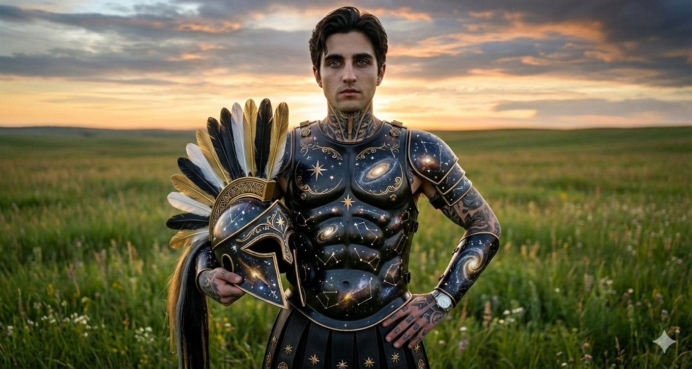

House Locsird · Middle ChildAge 37Soldier · StrategistStellgaze-Raised
He has been described — by his sisters, by his cousins, by the soldiers who serve under him — as the steadiest member of the family. None of them are wrong, and none of them have quite captured why.
Age
37
Birth Order
Second · Middle Child
Role
Soldier · Strategist · Western Coast
Visual Register
Stellgaze Cosmic by Default
I.
Personality
First instinct: listen. Second instinct: wait. Third instinct: precise.
Dravik is quiet. Not the manufactured quiet of someone who has decided not to speak, the genuine quiet of someone whose first instinct is to listen and whose second instinct is to wait. The third instinct, when it comes, is precise. He has been described — by his sisters, by his cousins, by the soldiers who serve under him — as the steadiest member of the family. None of them are wrong, and none of them have quite captured why.
He is thirty-seven, the middle child by birth order, and he has occupied the space between his eldest sister's composure and his younger sister's temper since before he could form the sentence to describe it. He is steady because someone needed to be. He has not made a virtue of it. It is simply what landed on him and he has carried it.
The light blue eyes against the dark hair register before the rest of him does. The neck and hand tattoos — partial Stellgaze constellation work, modified for a Locsird-named son raised in Astravar — do the same. He is striking in a quiet register, and he has decided not to make use of it. This decision, like most of his decisions, has held.
II.
Soldier and Strategist
Locsird by name. Stellgaze by upbringing. His own man underneath both.
The Locsird Name
By the alternation pattern, the middle child of a Stellgaze-Locsird union takes the Locsird name. Dravik holds it. He has not contested it, and he has not used it as a hinge to claim Royal House standing he did not earn. He is a Locsird by structural inheritance and a Stellgaze by upbringing. He has chosen to wear the second more visibly than the first.
The Astravar Raising
Born and raised in the gothic city, his formation was Stellgaze culture from the start. The cosmic register, the constellation tattoos, the long sightlines toward the western sea — these are the things he learned to think with. The imperial purple of his father's house is something he wears when the situation specifically calls for it. The cosmic black-and-gold of his mother's house is what he wears by default.
Soldier
He serves. The exact role is variable — he has held multiple commands across the western coast, and the assignments have moved as the strategic picture has moved — but the through-line is constant. He puts himself where he is needed, and he is reliable in a way that has become a kind of currency in the kingdom's defense apparatus.
Strategist
The mind that goes with the soldier. He is the one who reads the maps before the meetings rather than during them. He is the one who flags the third-order consequence the room had not yet considered. His mother taught him to look further forward than the immediate problem. The teaching took.
III.
Reference Images
Formal · Black Tuxedo
Clean black tuxedo, gold star pin at the lapel — the Locsird star, worn deliberately for the occasion. Neck and hand tattoos visible. The Locsird name worn in formal register without losing the Stellgaze register underneath.

Battle · The Cosmos Adopted
Galaxy-printed cuirass, gold trim, the feathered helmet held aside, prairie sunset behind him. He wears Stellgaze in battle, not Locsird. The choice is the character.
IV.
Relations
Maraveth Stellgaze
Mother · The Far-Seeing
She did not raise him to be a prophet. She raised him to be useful. He has been. The relationship is quiet — neither of them performs warmth, and neither has needed to. The understanding between them does not require translation into language. When she opens her mouth in council, he is the family member most likely to have already understood what she is about to say.
Rhyzen Locsird
Father · The Sardonic
His father has not asked him to wear Locsird purple in battle. Dravik wears Stellgaze cosmic, and Rhyzen has not flinched from the choice. The acknowledgment is mutual and unspoken. They are different men in temperament — Rhyzen sardonic, Dravik quiet — but the underlying disposition is the same: low patience for performance, high attention to what is actually moving in the room. The bond is steady. It does not require maintenance.
Calistra Stellgaze
Eldest Sister · Fifty Years Older
She raised him alongside their parents in the way only an Apex eldest sister can. He treats her with the quiet respect of a soldier who recognizes a commander. She treats him with the warm acknowledgment of someone who has watched him become exactly the man she hoped he would become. They do not need to speak often. When they do, the conversation is exact.
Soryn Stellgaze
Younger Sister · Two Years Apart
The closest sibling in age, and the one whose temper he has learned to read better than anyone else. He is the steady one in the pair — quiet where she is loud, considered where she is reactive. He has stepped in front of her at least three times when stepping in front would cost him something. She has never thanked him in plain language for any of it. They both know.
King Jonzhento Locsird
Uncle · The Crown
His father's brother. The relationship is family-warm rather than royal-formal — Dravik has known him his whole life, and the King treats him with the easy affection given to a steady nephew. There is no political weight between them. There may, eventually, be. For now there is only the quiet acknowledgment that the boy turned out well.
Lessio Locsird
Cousin · The Returned
Sixteen years old, just back into the family. Dravik does not know him well — the long absence broke continuity, and the age gap was already substantial. What he has decided is that he will be useful when he is needed and not before. He has not crowded the boy. He has not pressed for a relationship that has not yet had the time to form. The boy will come to him when he is ready, or he will not. Either way, Dravik will be where he is supposed to be when the moment arrives.